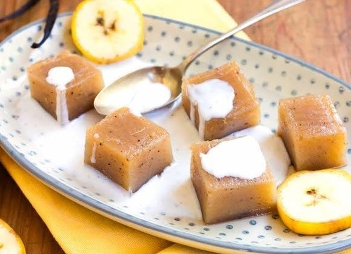

le poé à la bannane
Un dessert vennu du pacifique

Ingrédients
- 1.3 kg de banane mûres
- 1.5 l d'eau
- 1/2 gousse de vanille
- 150 g de fécule de manioc
- 1 noix de beurre
- 100 g de sucre
- 20 cl de lait de coco en boîte
Préparation
- Mettre les bananes épluchées à cuire dans l'eau avec la vanille pendant 15 min.
- Egoutter, laisser refroidir et passer à la moulinette pour obtenir une compote.
- Mélanger la compote avec la fécule de manioc
- Verser dans un plat de 3 à 4 cm de hauteur préalablement beurré.
- Mettre au four pendant 30 min, thermostat 6 (180°).
- Découper le Poé, saupoudrer de sucre et napper de lait de coco.
- Laisser tiédir ou refroidir et déguster